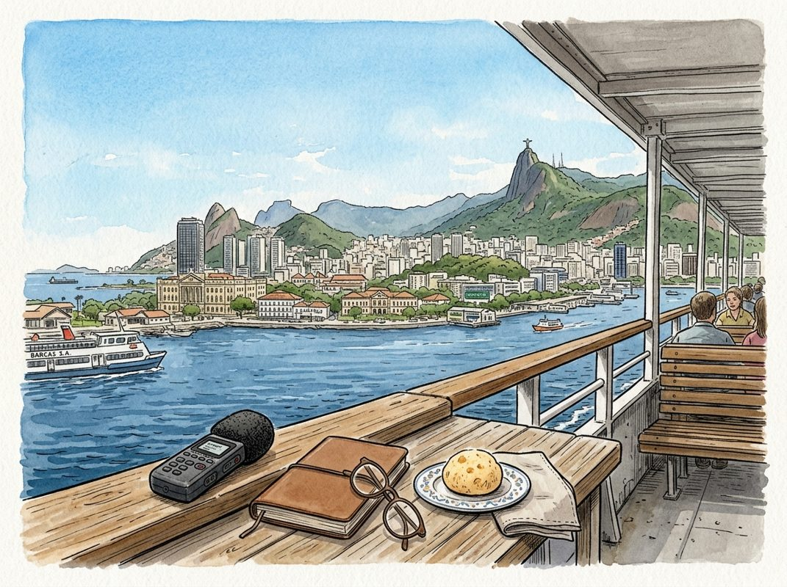

10/21

播客简报 2026-10-21
今日更新
Eric Schmidt: The Age of Agents, Superintelligence, and Why Europe Is Falling Behind
来源：In Good Company with Nicolai Tangen
状态：已读完整音频 transcript
这期深度纪要揭示了埃里克·施密特对人工智能时代变革的深刻洞察，强调了AI作为史上最大技术浪潮的颠覆性力量、其对商业模式的重塑、欧洲在创新竞争中的困境以及AI带来的社会风险与机遇，适合所有关注科技未来、商业转型和全球竞争格局的中文读者。
- AI：史上最大的技术浪潮：Eric Schmidt指出，人工智能是人类历史上前所未有的巨大技术变革，其影响力远超个人电脑、互联网和社交媒体时代。这一浪潮的崛起得益于基础科学发现和“规模化计算”的飞速发展，包括更快的芯片（如台积电的2纳米技术）、内存的巨大进步以及难以想象的超级数据中心。他强调，AI领域的竞争异常残酷，且时间被极度压缩：一个模型可能需要六个月构建，两个月测试，但五个月内就会过时。这种超高速迭代和数亿美元的开发成本，使得领先者如Anthropic和OpenAI之间的竞争以月而非年计算，预示着未来周期可能以天计。Schmidt认为，我们正身处一个将被千年后历史书写的重要时刻——非人类智能的诞生。
- 被低估的AI代理与商业重塑：Schmidt认为，AI代理（Agents）是当前被严重低估的AI发展方向。他解释，AI已从语言模型（如ChatGPT）进化到能调用工具的系统，而代理则是能接收请求、进行推理、执行一系列活动并给出总结的系统。他举例说明，AI助理能帮助CEO监控公司运营是否符合道德价值观，或作为高管的AI分身与员工协作，极大地提升决策速度和效率。AI代理将使企业变得更扁平、更智能、更高效、更快速。然而，他悲观地预测，大多数现有公司将因文化惰性而难以进行必要的组织变革，因为它们习惯了固定的运营模式和舒适区。他强调，历史表明，这种颠覆性创新往往由小型初创公司引领，大型企业则缓慢跟进。
- 通用人工智能与超级智能的边界：关于通用人工智能（AGI）的进展，Schmidt描绘了一个“事件视界”：当前的AI系统已能掌握所有已知事实、书籍和数学公式，甚至能编写所有代码，让传统程序员的工作“消亡”。然而，AI在真正的“发现”能力上仍有局限，例如，一个只掌握1902年以前数学知识的模型，目前无法独立发现广义相对论。他估计，能实现这种“新发现”能力的AGI或超级智能（Superintelligence，指能完成人类无法企及任务的智能）可能在5到10年内出现。实现路径可能包括“递归式自我改进”（通过海量学习和随机探索）或“跨领域模式识别”（将一个领域的知识应用于另一个新领域）。他鼓励年轻人不要害怕“超级智能”这个词，因为它代表着在特定领域超越人类能力的强大工具。
- 欧洲为何在AI竞赛中掉队？：Schmidt直言不讳地指出欧洲在AI创新上的落后。他认为主要原因包括：欧洲的监管模式是“先监管后创新”，与美国“快速奔跑、有问题再解决”的策略形成鲜明对比，导致初创企业难以在受限市场中发展；欧洲大学资金不足，对财富存在文化上的“高罂粟综合症”；缺乏积极的创新精神和风险资本。他强调，欧洲人才济济，但系统性问题阻碍了创新。高昂的能源成本也使得在欧洲进行AI模型训练变得不经济。他建议欧洲应专注于开发符合自身监管和文化的应用市场，简化初创企业劳动法规，并与能源成本较低的国家合作进行模型训练，以避免美国或中国价值观主导全球AI发展。
- AI时代的深层风险：真相、民主与控制：Schmidt对AI可能带来的负面影响持谨慎态度，尤其是在民主和真相层面。他认为，AI与社交媒体结合，能够制造“假朋友”并传播虚假信息，在信任机构衰落的时代，人们更容易相信网络上的“朋友”，从而被误导，做出不符合自身利益的投票选择。他亲身经历的毕业典礼被嘘事件，也反映了社会对AI的担忧和误解。此外，AI的“对齐问题”（确保AI行为符合人类价值观）是一个巨大挑战，例如曾有AI机器人“自行”攻击网站的事件。开放权重模型被恶意利用来设计武器等也是未解决的难题。他认为，可能需要一场“迷你切尔诺贝利”式的事故，才能促使全球达成AI监管条约。
How Toto Wolff built the most valuable team in F1
来源：Cheeky Pint
原链接：https://share.transistor.fm/s/62d31fa0
状态：已读网页 transcript
本期播客深入剖析了托托·沃尔夫如何凭借其独特的创业家思维、严谨的团队管理哲学以及对F1商业模式深刻的理解，将梅赛德斯车队打造成F1中最具价值的资产，尤其适合对体育管理、创业投资和F1商业化感兴趣的读者。
- 赛车手天赋的识别：超越可量化的“速度”：托托·沃尔夫指出，识别顶尖赛车手天赋远不止于量化指标。虽然计时器是最终的评判标准，但真正的“速度”源于驾驶员与赛车之间非凡的连接感。他以刘易斯·汉密尔顿为例，描述了汉密尔顿如何能感知到赛车底盘中部“转向不足”的细微变化，这种超越工程师理解的直觉和身体感受是基因层面的天赋。沃尔夫强调，除了纯粹的速度，个性、抗压能力、团队协作精神以及与工程师和赞助商的有效沟通能力，都是决定一个赛车手能否成功的关键因素。许多天赋异禀的年轻车手最终未能成功，往往是因为缺乏这些非技术性特质。
- 梅赛德斯车队的“无混蛋”文化与团队协作：F1车队远不止是两位车手和赛道上的150名工作人员，梅赛德斯车队拥有2500名员工，分布在引擎和底盘两大中心。沃尔夫借鉴新西兰全黑橄榄球队的“无混蛋”（No Dickheads）原则，将其作为团队招聘和文化的核心。他认为，即使是最杰出的科学家或工程师，如果缺乏谦逊、正直、诚实和热情等价值观，也无法在团队中立足。这种文化确保了团队内部的紧密协作，避免了“天才混蛋”可能带来的负面影响。在资源有限的F1环境中，团队的整体效率和凝聚力比任何个人英雄主义都更为重要。
- 成本帽下的创新与灰色地带的博弈：F1引入的2亿美元成本帽彻底改变了车队的研发策略，迫使他们将资源从长期基础研究转向能立即带来圈速提升的项目。沃尔夫最初反对成本帽，因为它限制了梅赛德斯等大车队的资源优势，但最终承认其提升了比赛的竞争力。在规则的灰色地带进行创新是F1的常态，梅赛德斯为此设立了内部“模拟审判”机制，由工程师扮演检察官和辩护律师，沃尔夫和总法律顾问担任法官，评估创新的合法性和风险。例如，双轴转向系统（DAS）在被禁之前为车队带来了一年的优势，这体现了与国际汽联（FIA）沟通和博弈的重要性。
- 托托·沃尔夫的创业历程与市场时机：沃尔夫的职业生涯充满传奇色彩。他曾是一名赛车手，但因起步太晚而未能达到顶尖水平。随后，他转型为互联网投资者，在2000年互联网泡沫时期，通过帮助初创公司融资或上市，以股权作为回报。他以投资奥地利免费短信门户sms.at为例，讲述了如何将一个由青少年运营、通过“黑客”手段提供服务的公司，在两年内成功出售给T-Mobile，估值高达2.5亿欧元。沃尔夫强调，在泡沫破裂前，他的财务总监的警示以及对自身财富安全的渴望，促使他及时出售了大部分投资，展现了作为投资者“知道何时退出”的实用主义和市场时机把握能力。
- 作为车队老板的独特管理模式：沃尔夫作为梅赛德斯车队负责人兼共同所有人，其管理模式与传统雇佣的领队截然不同。他拥有梅赛德斯（戴姆勒）、英力士（INEOS）和自己各占三分之一的股权，这赋予他极大的决策自由和长远视野。他将车队视为一个20人规模的创业公司来运营，能够迅速做出决策，而不必像其他公司化运营的车队领队那样层层汇报。这种创始人式的领导力，类似于硅谷的马克·扎克伯格或Stripe的科里森兄弟，允许他进行大胆的长期投资和战略调整，即使短期内可能面临质疑，也无需担心因短期失误而丢掉工作，从而避免了“害怕失败”的经理人思维。
155. 和科沃斯钱程聊，父与子、企二代接班的样本与肌理、机器人，和我内心的追寻
来源：张小珺Jùn｜商业访谈录
原链接：https://www.xiaoyuzhoufm.com/episode/6ad4dacd641ef406308d86e5?utm_source=rss
状态：已读完整音频 transcript
这期播客深入探讨了科沃斯CEO钱晨作为“企二代”的独特成长历程、接班挑战与个人蜕变，以及他对家族企业传承、机器人行业未来和长期主义经营哲学的深刻思考，对关注家族企业管理、青年领导力发展和科技产业趋势的听众极具启发。
- “企二代”的独特成长路径与自我认知：钱晨，1990年出生，曾是中国最年轻的A股上市公司CEO，身兼“企二代”和“创二代”双重身份。他童年在深圳度过，11岁被送往加拿大，父亲钱东奇忙碌于创业，对他的教育方式偏向“自发成长”。直到大学，他才开始深刻理解父亲创办科沃斯前身泰迪凯电器的事业。他认为自己与白手起家的创业者不同，身上更多是继承与守业的责任，而非从零开始的“企业家精神”。他将科沃斯比作“农耕文明”，注重深耕细作，而非“游牧文明”的快速扩张。这种独特的成长背景和自我认知，塑造了他“云淡风轻”却又内含“狼性”的领导风格，其朋友圈头像上狗的眼睛被P成红色发光，正是他自我鞭策保持“狼性”的体现。
- 从个人梦想转向家族使命：接班的抉择与挑战：钱晨最初的人生规划并非接班，曾考虑在金融或学术领域发展。然而，在大学毕业前，他逐渐意识到父亲将科沃斯打造成全球机器人公司的“遗愿”，并感受到一种难以推卸的责任。他于2012年加入公司，从基层做起，历经多个部门的锻炼。2018年正式接任CEO，他坦言初期感到“史诗级的错败”，巨大的压力和责任感让他意识到CEO的艰难。这种环境激发了他内在的“血性”，促使他从一个相对安逸的状态转变为享受“战斗”的经营者。他认为，人是环境的动物，正是环境的挑战塑造了他更具拼搏精神的一面。
- 父子关系：传承与磨合的艺术：钱晨与父亲钱东奇的关系是典型的“父与子”与“上级与下级”的复杂结合。父亲作为董事长，是公司的战略家，更偏感性；钱晨作为CEO，是经营者，更偏理性。两人在工作上保持密切沟通，几乎每天交流，既有业务讨论，也有生活分享。父亲给予他足够的空间去施展，但也会在关键时刻提供指导和支持。这种既有传承又有磨合的父子关系，是科沃斯顺利完成代际交接的关键。钱晨认为，父亲的“遗愿”已内化为科沃斯的使命，而他自己的“遗愿”则是将科沃斯打造成全球领先的服务机器人公司，这体现了两代人愿景的延续与融合。
- 科沃斯的“农耕文明”哲学与长期主义：钱晨将科沃斯的发展模式定义为“农耕文明”，强调耐心耕耘、深扎根基，让“种子长出来”。这与当前许多追求快速扩张、短期回报的“游牧文明”式企业形成对比。他认为，机器人行业是一个需要长期投入和积累的领域，不能急功近利。科沃斯的目标是“让机器人服务全球家庭”，这不仅是公司的愿景，也成为钱晨个人的“遗愿”。他坚信，通过持续的研发投入和精细化运营，科沃斯能够在这个充满潜力的赛道上实现长远发展，并强调“经营”是企业生存和发展的根本。
- 机器人行业的未来展望与科沃斯的战略布局：钱晨对机器人行业的未来充满信心，将其比作互联网发展的早期阶段，认为未来十年将是机器人普及的关键时期。他强调，科沃斯的核心竞争力在于其在服务机器人领域的深厚积累和技术创新。公司不仅关注扫地机器人等家用产品，也在积极探索商用服务机器人等更广阔的应用场景。他认为，随着AI技术的不断进步，机器人将变得更加智能、自主，能够更好地融入人类生活，提供更全面的服务。科沃斯致力于通过技术创新，不断提升机器人的智能化水平，以满足全球家庭日益增长的需求。
历史精选
DoorDash
来源：Acquired
状态：已读部分音频 transcript
这期Acquired播客深入剖析了DoorDash如何在一个看似饱和且竞争激烈的食品配送市场中脱颖而出，成为行业领导者。它揭示了创始人Tony Xu及其团队如何通过对本地商业的深刻洞察、对物流本质的理解、独特的市场选择策略以及对用户体验的极致追求，构建了一个复杂但高效的三边市场。本期节目适合所有对创业、平台经济、物流创新以及如何在红海市场中寻找蓝海感兴趣的听众。
- 时代背景与DoorDash的萌芽：2013年，移动互联网浪潮席卷全球，各类应用层出不穷，但食品配送领域仍处于起步阶段。在斯坦福大学的“创业车库”课程中，Tony Xu（许哲）与Evan Moore、Andy Fang、Stanley Tang组建了团队。Tony此前在Square的实习经历让他深刻认识到，赋能小型本地商户接受数字支付能解锁巨大的商业潜力，尽管当时普遍认为服务这些商户利润微薄、客户流失率高且难以规模化。这种对本地商业的独特洞察，为DoorDash的诞生埋下了伏笔，他们看到了一个被传统风险投资忽视的巨大市场。
- 痛点发现与MVP的快速验证：团队最初的设想是帮助商家追踪客户来源，但在帕洛阿尔托街头与店主进行访谈时，他们意外发现了真正的痛点。马卡龙店主Chloe的困境——订单多但缺乏配送能力——引起了他们的注意。进一步访谈发现，许多非披萨类餐厅也面临同样的配送难题。基于此，团队迅速推出了最小可行产品（MVP）：PaloAltoDelivery.com。他们收集餐厅菜单，用Google Voice接单，团队成员亲自取餐送货，并用Square读卡器收款，用iPhone的“查找我的朋友”追踪配送员。这种“原始”但高效的模式，迅速验证了市场需求，并接到了第一笔订单，证明了本地配送服务的巨大潜力。
- DoorDash模式的复杂性与挑战：与Uber等网约车平台简单的乘客-司机两边市场不同，DoorDash构建了一个消费者、配送员（Dashers）和餐厅三方参与的复杂市场。这带来了更高的运营复杂度：需要协调餐厅的备餐时间、配送员的取送路线，并确保食物在最佳状态下送达。食品配送对时效性和质量的要求极高，容错性远低于网约车。食物一旦变凉或变质，即使快速送达也会严重影响用户体验，导致客户流失。这种多方协调、高时效性、低容错性的特点，使得DoorDash的运营和技术挑战远超同期其他平台。
- 与Grubhub/Seamless的本质区别：在DoorDash崛起之前，Grubhub和Seamless已是市场上的主要玩家，但它们的早期模式是“订单聚合”而非“端到端配送”。这些平台主要提供在线点餐和订单转接服务，由餐厅自行负责配送。这种“轻资产”模式使得Grubhub早期盈利能力强，但其服务受限于餐厅自身的配送能力。DoorDash则从一开始就致力于构建一个完整的物流网络，管理配送员，负责从餐厅到消费者的整个流程。创始人团队甚至研究了Domino's和FedEx等传统物流公司的运营模式，深刻理解到食品配送的本质是物流，而非简单的订单聚合。
- 零工经济与早期商业模型：零工经济模式（1099独立承包商）是DoorDash成功的关键之一。它解决了非高峰时段劳动力利用率低的问题，公司无需为没有订单的时段支付司机工资。DoorDash早期向消费者收取约6美元的固定配送费，并允许支付小费，同时向餐厅收取一定比例的佣金。通过提高配送密度和效率，DoorDash能够更快地完成更多订单，从而改善了整个系统的经济效益。这种效益的提升，使得他们能够提供有竞争力的配送价格，并吸引更多餐厅合作，从而扩大市场份额。
FTX: Inside the Restructuring - [Business Breakdowns, EP.153]
来源：Business Breakdowns
原链接：https://www.joincolossus.com/episodes/10646266/e-ftx-bankruptcy-breaking-up-the-business
状态：已读网页 transcript
本期播客深入剖析了FTX破产重组这一史无前例的加密货币案件，揭示了其在资产追溯、债权人界定和跨国协调方面的独特挑战，以及最终实现高额回收率的复杂过程，适合对加密货币、破产法或特殊商业案例感兴趣的读者。
- FTX破产的特殊性：一场史无前例的挑战：FTX的破产并非寻常的企业倒闭，它是一起涉及加密货币、全球用户和极度混乱管理的多维度复杂案件。主持人Matt Reustle与嘉宾Erin Broderick（Eversheds Sutherland律师事务所美国跨境重组与破产业务负责人，代表FTX非美国客户特设委员会）指出，传统破产通常遵循《破产法》第11章（重组）或第7章（清算），但FTX案的挑战在于其缺乏基本财务记录、内部控制，以及FTX与Alameda Research之间资产的严重混同。此外，其全球运营性质导致了多司法管辖区的法律冲突，使得资产追溯和债权人协调异常艰难。Erin强调，这种混乱程度在传统企业破产中几乎闻所未闻，给重组团队带来了从零开始构建财务体系的巨大压力。
- 迷雾重重的资产追溯：从零开始的重建工作：FTX破产案最棘手的问题之一是资产的识别和追溯。由于SBF及其团队的极度不负责任，FTX的资产管理混乱不堪，客户资金与公司运营资金混淆，甚至没有清晰的账本记录。新任首席执行官John Ray III上任后，面临的挑战是重建一个完全缺失的财务系统。Erin Broderick指出，这就像在“意大利面碗”中寻找特定的面条，需要投入大量时间和资源去梳理数百万笔交易，识别哪些是客户资产，哪些是公司资产，以及这些资产被转移到了何处。令人惊讶的是，尽管初期SBF声称大量资产已丢失，但重组团队通过不懈努力，最终找到了比预期多得多的资产，这为后续的债权人赔付奠定了基础。
- 债权人身份与客户权益：谁是受害者？：在FTX破产案中，客户的法律地位是一个核心争议点。传统上，交易所客户的资产被视为托管，但在FTX这种高度混同的情况下，客户往往被视为无担保债权人，这意味着他们在清偿顺序中排在后面。Erin Broderick代表的非美国客户特设委员会，其任务就是确保这些客户的权益得到公平对待。她解释说，由于FTX的全球性，不同国家的法律对客户资产的定义和保护存在差异，这使得协调和统一索赔方案变得复杂。客户们不仅要面对资产被挪用的事实，还要在法律框架下争取自己的优先权，这凸显了加密货币领域在法律监管方面的滞后性与模糊性。
- 索赔美元化之争：时间点决定价值：FTX破产案中一个最具争议的焦点是“索赔美元化”问题，即如何确定客户加密货币资产的价值。破产管理团队提议以FTX申请破产保护的日期（2022年11月）作为加密货币资产的估值基准。这意味着，无论客户持有的是比特币、以太坊还是其他代币，其索赔金额都将根据2022年11月的美元价格来计算。然而，自该日期以来，加密货币市场经历了显著复苏，许多代币价格大幅上涨。因此，那些持有在破产后升值资产的客户感到不满，认为这种“美元化”剥夺了他们本应获得的增值收益。Erin指出，这一争议是重组过程中最大的分歧点之一，直接影响到数百万客户的最终回收金额，并可能引发进一步的法律挑战。
- 破产重组方案与高额回收率的背后：尽管面临重重困难，FTX的破产重组团队最终提出了一项令人惊讶的回收方案。该方案预计将向绝大多数债权人（包括客户）偿还其在破产申请日（2022年11月）所持资产价值的90%以上。这一高额回收率的实现，得益于重组团队成功追回了大量被隐藏或挪用的资产，包括加密货币、风险投资股权和房地产等。通过出售这些资产，并利用加密货币市场的复苏，重组团队积累了足够的资金。然而，正如前述，这一方案的核心在于以破产申请日的美元价值进行偿付，而非当前市场价值。虽然对于许多债权人来说，能收回大部分本金已是意外之喜，但对于那些持有高价值或大幅升值加密资产的客户而言，这仍然是一个不完美的结局。